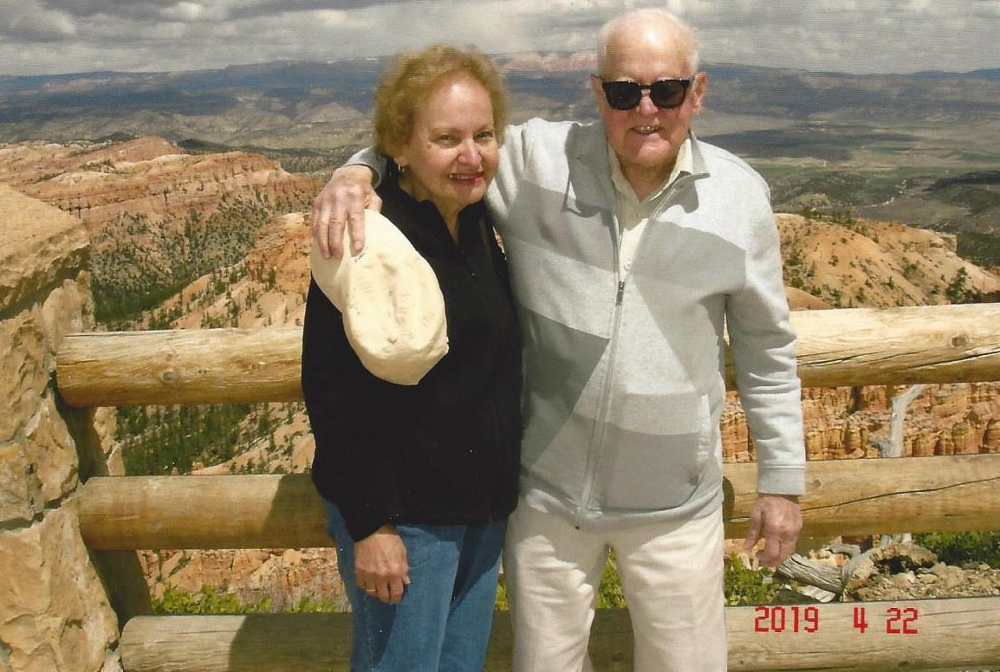

About the Author
In the 87 years Franklin Otto Gloor has existed on this earth, he has carved his niche as an adept electrician, an ardent Switzer, a ping-pong–laden water skier. He has developed into a budding mathematician and a persistent prophet of the next generation’s counting system, a lover of words who worships at the Dictionary daily. He has filled his house with music, has raised decades of green beans, tomatoes, eggplants and red beets in his carefully tended garden. He has become an incessantly proud father and grandfather, three times over each. And for 55 years, he has been married to a woman he loves to Mars and back.
So, it’s suffice to say that Mr. Gloor has lived a long and tremendously full life — one that would be tremendously difficult to pin down into a neat little blog post. But since Mr. Gloor is the sort of man who inspires the challenging, we shall waste no time in getting started.
Born in 1933, the ninth of ten children, Mr. Gloor grew up in Pittsburgh, Pennsylvania. His generation of Gloors was the first to come into the world on American soil — his mother and father had both immigrated from Switzerland when they were quite young. From the start, Mr. Gloor has been fiercely proud of his Swiss roots, registering his wife and later his children for dual citizenship. For a number of years, Mr. Gloor even served as an officer for the Swiss-American Society of Pittsburgh. To this day, he and his wife regularly attend picnics with the Swiss Club. Mr. Gloor even found a fleece quarter-zip embroidered with “Swiss” at a thrift shop near one such gathering.
Mr. Gloor attended Connelley Technical Institute at a time when the country was engulfed in war. Soon after he graduated — his skills as an electrician sharply honed — he was drafted to serve. He was shipped out to Hawaii, where he repaired tank radios with the 25th infantry division.
Upon returning home, Mr. Gloor picked right back up at his job with Bell Telephone, which he held for 30 years. He married a whip-smart schoolteacher, whose intellect he admires deeply, and had three children. Today, he continues to live in Pittsburgh with a dog named Cogo, in a house he built himself.